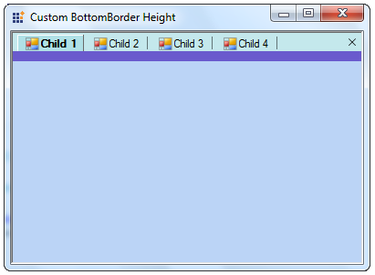

The height between the Tab and the Control can be set using the BottomBorderHeight property of the TabHost. This property can be accessed by overriding the TabbdedMDIManager as shown in the code snippet.

Figure 1105: Custom BottomBorder Height
|
[C#]
public class TabbedMDIManagerExt : TabbedMDIManager { public TabbedMDIManagerExt() : base(){ }
public TabbedMDIManagerExt(IContainer container): base(container){}
protected override TabHost CreateTabHost() { TabHost tabHost = base.CreateTabHost();
// Sets the Height in pixels. tabHost.BottomBorderHeight = 10; tabHost.BottomBorderColor = Color.SlateBlue; return tabHost; }
protected override MDITabPanel CreateMDITabPanel() { MDITabPanel tabPanel = base.CreateMDITabPanel(); tabPanel.ActiveTabColor = Color.PowderBlue; return tabPanel; } } |
|
[VB]
Public Class TabbedMDIManagerExt Inherits TabbedMDIManager Public Sub New() MyBase.New() End Sub
Public Sub New(ByVal container As IContainer) MyBase.New(container) End Sub
Protected Overrides Function CreateTabHost() As TabHost Dim tabHost As TabHost = MyBase.CreateTabHost()
' Sets the Height in pixels. tabHost.BottomBorderHeight = 10 tabHost.BottomBorderColor = Color.SlateBlue Return tabHost End Function
Protected Overrides Function CreateMDITabPanel() As MDITabPanel Dim tabPanel As MDITabPanel = MyBase.CreateMDITabPanel() tabPanel.ActiveTabColor = Color.PowderBlue Return tabPanel End Function End Class |